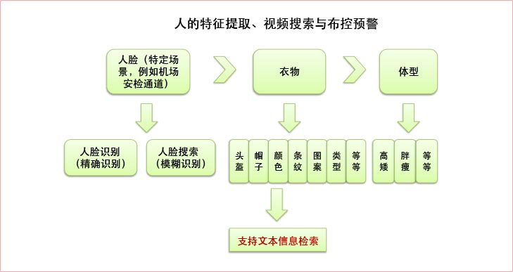
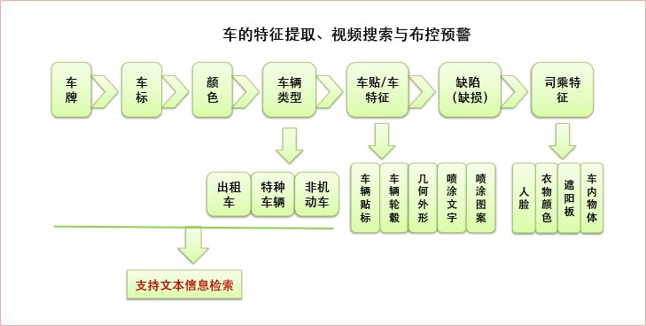
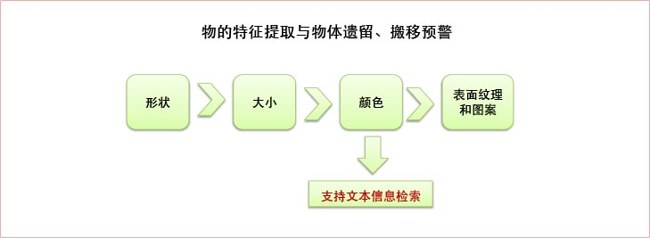
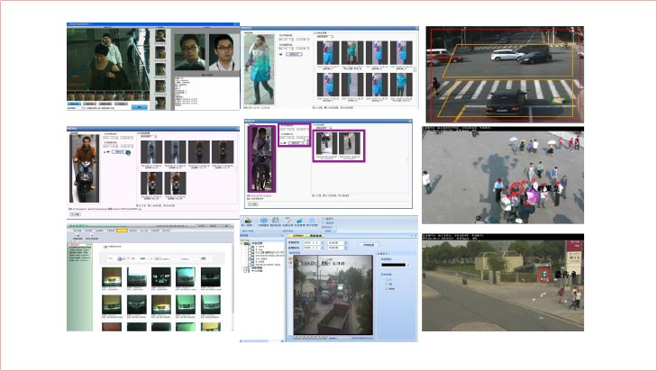

视频智能分析检测器可以自动捕获提取图片和视频中的人、车、物等目标，并智能分析提取目标的个体特征和属性，检测其行为事件，从而完成图像的机器智能“解读”，将非结构化的图像数据转换为半结构化或结构化信息，为后期的图像内容挖掘和图像智能报警应用提供支撑基础。
  提供多种视频导入方式。提供本地视频导入、网络共享导入及移动硬盘导入方式。
系统采用了先进的3D视频检测技术，能完成复杂场景视频的目标识别，并能结合运动信息进行运动目标的检测，能够保证高准确率的目标识别。
系统根据不同的目标物，可以提取不同特征信息。针对车可以提取车牌、车标、车身颜色等信息；针对人可以提取服饰 特征、人脸特征等；针对运动物可以提取运动轨迹等信息。
系统对视频中的运动目标按照人和车及颜色进行归类建立索引，可实现高效的检索性能，便于视频研判时快速定位目标。
系统支持外部载入的嫌疑目标图片，同系统内的图像数据进行比对，通过相似度排列，快速锁定嫌疑目标。
浓缩视频可以自动跳过视频中无目标的区域，减少观看所需时间，提高工作效率,支持浓缩视频导出功能。
系统支持H.264、MPEG4、MPEG2、M-JPEG等视频格式，且兼容主流监控厂商的视频格式。
具有密度高、性能稳定可靠、低功耗等方面的优势；同时利用多个服务器进行任务调度和均衡分配任务。
联想ThinkServer SS430以其高端的性能，强大的CPU处理能力，高密度的配置，兼容开放的架构，绿色环保低功耗等优势，完美的支撑了图像侦查解决方案，为用户提供舒适的客户体验，有效的保障了各部门、各警种的业务实战应用。
联想ThinkServer SS430是一款面向互联网Web接入应用的超高密度服务器。与传统机架式服务器相比，SS430在标准的2U空间内可以支持4个独立的服务器节点，具有高密度，低耗能，高网络性能，易管理性能等特性。非常适合有大规模横向扩展需求的互联网企业。
适用于互联网服务提供商如，博客，即时通讯，社区网站的个人空间等具有大量访问需求的互联网业务网络游戏登陆服务器。
视频智能分析检测器（集群版）部署于监控中心机房，集成接入各类视频监控的实时视频和历史视频，通过加载面向人、车、物、事的博康全算法视频内容提取功能，可用于人脸识别及布控报警，复杂场景行人特征识别及以图搜图，道路监控两轮车及机动车特征提取及车辆搜索，基于行为的视频内容检索，基于事件的监控主动报警等实战应用，变被动监控为主动监控，活化视频，大大提高视频图像的查阅效率。
